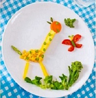

O que é Casa Chefe??
O Casa Chefe é um faz de conta. Um momento de interação entre mãe e filha com seu público da imaginação onde tudo pode, desde comercial de 'biscoito feitos de fruta de choz-cola ( chocolate com coca-cola) e pet-shop para Unicórnio, trazdoarcoiris.
A comida é sempre a mesma, isso na realidade. Com uma boa dose de criatividade e fantasia. Tudo cria forma, cor, cheiros e nacionalidades diferentes.
A mamãe, ensina as receitas na realidade, mas, quem dá o tom da imaginação e do lúdico é a nossa maravilhosa apresentadora Isadora, super simpática e altamente falante.Cozinhar é ...
- Cria lembranças familiares ;
- Estimula uma relação saudável com a comida ;
- Ensina a cooperar ;
- Cria responsabilidade ;
-
Jogos
-
Receitas
 -
Contatos